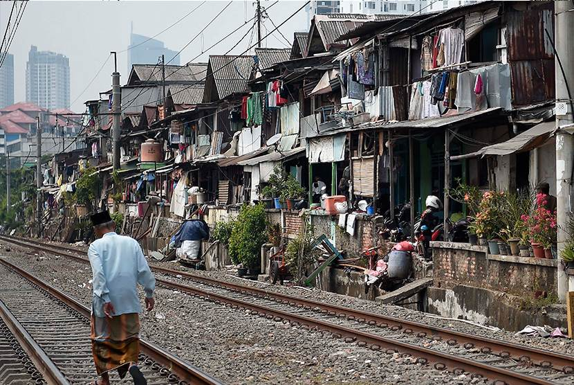
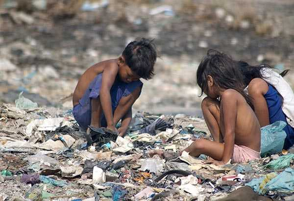

 
Apa pengertian dari SDGs 1 "Tanpa Kemiskinan"?
SDGs 1 adalah tujuan dari Sustainable Development Goals (SDGs). Dengan tujuan, untuk mengakhiri kemiskinan dalam segala bentuk. Tujuan program ini, tidak hanya berfokus atau membahas kemiskinan saja. Tetapi juga, mencakup hal lain seperti kelaparan, malnutrisi, terbatasnya akses layanan kesehatan, air berish, dan lain-lain. Singkatnya, program ini memiliki fokus utama dalam penyebab kemiskinan. Melalui SDGs 1, terdorongnya pemerintah dan masyarakat untuk meningkatkan kesempatan kerja, menyediakan bantuan bagi yang kesulitan, serta membangun ekonomi agar masyarakat tidak mudah terjatuh kembali akibat krisis ekonomi/bencana alam.